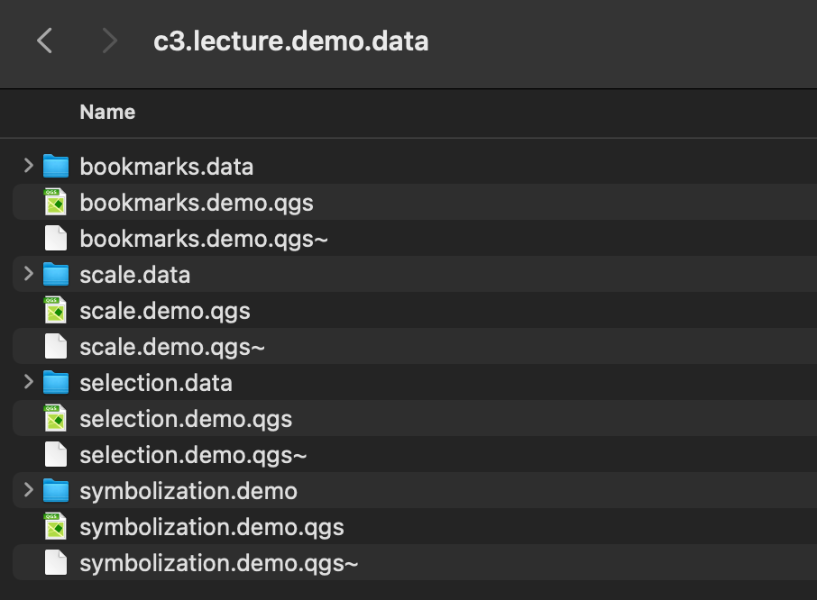

Class 4 Demonstration Lab: Cartographic Symbolization & Thematic Mapping, Part I
Spring 2026 | UENV 3200 - CRN 11009 + UURB 3210 - CRN 111008
Class 4 Lecture Demo
Class 4 Agenda:
Class 4 Themes
- Cartographic principles:

Reference Maps vs Thematic Maps
Map Scale

- Thematic strategies Dot Density, Categorical Symbolization & Proportional Symbolization
- Nominal vs continuous data types:

- John Snow Cholera Map - 1 to 1 relationship:
- 1 coffin = 1 death. This is NOT an example of Dot Density:

- US Census data - 1 to many relationship:
- 1 categorized dot = many persons per racial category:

- Map Scale
- Representative Fraction
- Verbal Scale
- Bar Scale

Class 4 Demonstration Labs:
Demo Data:

QGIS Lecture Demo Part 1 - Spatial Bookmarks + Scale + Map Generalization
- Open the Download Link to Class 4 demo data (named class 3) and find the
bookmarks.demo.qgs. Open this QGIS project file. The video demonstration outlines the purpose and process to establish spatial bookmarks across various map scales and locations within one project file.


QGIS Lecture Demo Part 2 - Select by Attributes (Natural Earth - Populatated Places) vs Selection by Location (Natural Earth - Countries & Populated Places)
Open the Download Link to Class 4 demo data (named class 3) and find the
selection.demo.qgs. Open this QGIS project file. The video demonstration outlines the purpose and process of both Select by Attributes vs Select by LocationWhile there are several ways to select attributes, using the Attribute Expression option is a common, powerful approach:

- Within an Attribute Expression selection, Structured Query Language (SQL) is used to form both simple and complex selections. Here the attribute query is structured as
"scalerank"=2whereas only those records with a scale rank of 2 are returned as an active selection.


- Unlike Select by Attributes which occurs within one spatial data layer, Select by Location occurs across two layers:


Note: both selection methods are critical foundational tools in GIS analysis workflows. Make sure that both the concepts and the processes of each are understood before working on this week’s assignment.
QGIS Lecture Demo Part 3 - Proportional + Categorical Symbolization in one Points Feature Layer
Note: QGIS allows for both categorical and proportional symbolization. However, when developing a respective legend for both dimensions, a workaround must be added in which the work in the first layer is copied to a duplicate second layer. Both locking items and Auto Update in the Map Layout are discussed in the video guide to complete a representative legend of both categorical and proportional symbolization for one points feature.
- Open the Download Link to Class 4 demo data (named class 3) and find the
symbolization.demo.qgs. Open this QGIS project file. To follow is the workflow outline utilized in the video guide:
Set project CRS to
3576Set Size Assistant to
GN_2020Set Categorization to
TIMEZONEEnact Data Defined Legend
Lock Map Item & Layers
Auto Update Toggle
offin Legend ItemCopy Symbolization from first layer to a duplicate, second layer.
Finalize Map Layout Design and Export
In the video guide, the following points are discussed:


GN_POP

QGIS Lecture Demo 4 - Map Insets - Multiple Frames + Layer Groups
- Open the Download Link to Class 4 demo data (named class 3) and find the
bookmarks.demo.qgs. Open this QGIS project file. Utilize the video guide to follow a typical map inset process:

The features in the bookmarks.demo.qgs for Brazil can be utilized in place of the features shown in the video guide. The process remains the same regardless the feature themes.

bookmarks.demo.qgs project file 
QGIS Lecture Demo 5 - Map Scale & Scale Bars
- Open the Download Link to Class 4 demo data (named class 3) and find the
scale.demo.qgs. Open this QGIS project file. Utilize the video guide to understand and develop a map scale bar: